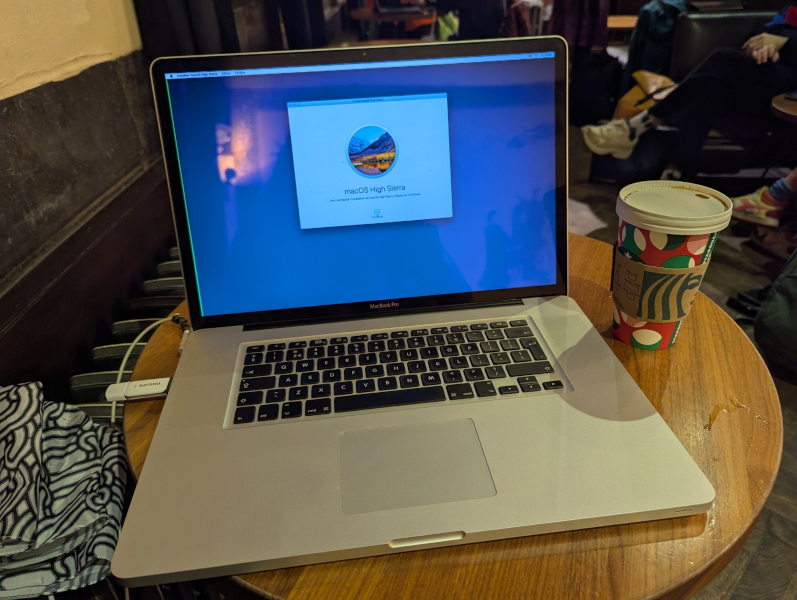

|  | CPU: 2.53 GHz Intel Core i5-540M Dual-CoreMemory: 2 GB DDR3 1066 MHzStorage: -GPU: NVIDIA GeForce GT 330M with 512 MB of VRAM and Intel HD Graphics with 256 MB VRAMCondition: Works but has issues |
First computer I bought in Belgium. Listed as "not working" which was kind of a gamble but it was cheap so I took the risk. I saw it show a question mark folder icon which means it can't find a bootable device, though I knew these suffered from some GPU failures as well that prevent it from booting. I bought a Samsung EVO 870 250 GB SSD for it and upgraded it in a Starbucks (pic below). After a fresh High Sierra install, it seemed to work but the green has issues, assuming it's either the display or the cable itself. It turns a lot of the shades of black and white into green. Also sometimes it just goes full green and doesn't fix itself unless you put it to sleep or reboot it. Also sometimes apps don't work at all.
I installed Sonoma on it and upgraded the RAM to 8 GB for a bit and it ran alright but was still unstable. For now I decided to take out the upgrades I did and put them in other machines while I diagnose what the issue is and fix the screen.